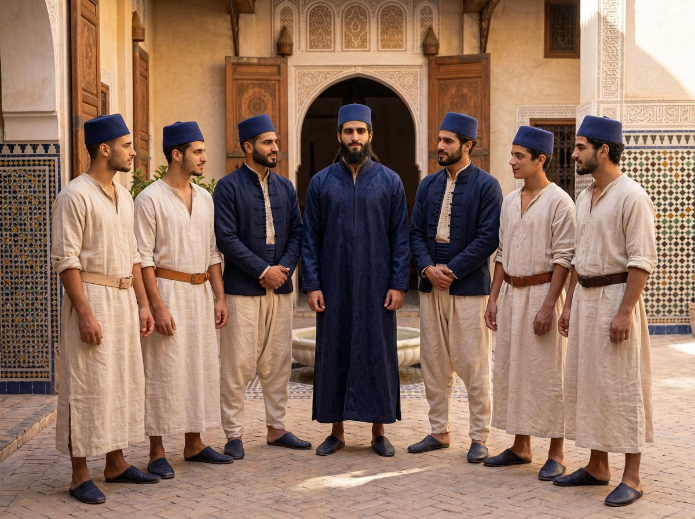
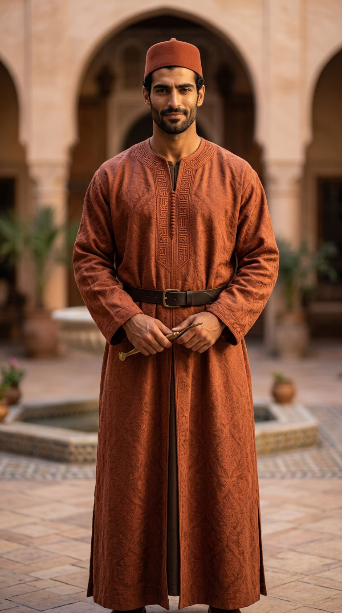
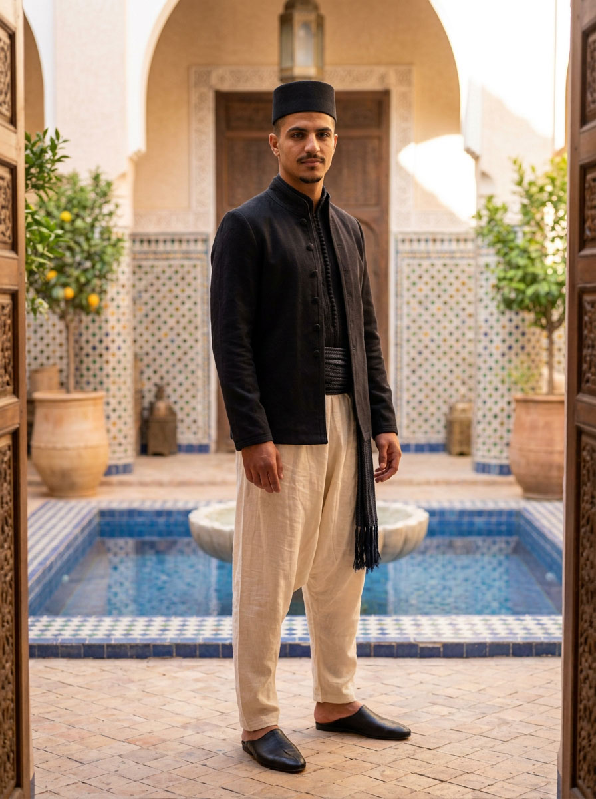

At-Tadbir
التدبير
The governance of the Riad — who trains, who decides, who answers.

At-tadbīr (التدبير) is not a term chosen at random. It is not the modern calque of "governance" — al-ḥawkama, imported from the vocabulary of the corporation — but the classical word that Islamic political thought reserved for the government of the household: the tadbīr al-manzil that Ibn Sīnā set, at the scale of the home, as the counterpart to the siyāsa that governs the city. The Riad thinks of itself as a house, not as an institution: this was the word it needed.
This page describes who holds which responsibility at Dar al-Hiraf — not an abstract organisational chart, but a chain of real people, each recognisable by their dress (see Al-Kiswa) as much as by their function.
THE CHAIN
From apprentice to the Ash-Shaykh

The trainee — the four grades
Each resident enters as an apprentice in a guild and progresses through the four grades of the Ḥizām al-Itqān, the grade belt — from untreated raw leather to the grade embroidered in gold thread. Nothing is gained by seniority alone: progression follows competence actually demonstrated.

Al-Naib — the deputy
One of the most advanced trainees in each guild carries out the function of nāʾib (النائب, "deputy"): he assists the others when the maalem is occupied or absent, without ever substituting for his authority on matters of training or discipline. A responsibility, not a separate rank.

The maalem — the master of the craft
One maalem per discipline, responsible for his own workshop and for the trainees entrusted to it. Selection weighs technical competence, uprightness and a verified reputation — the house favours young masters, for whom the charge is a source of autonomy and professional pride, with no rigid age ceiling: competence and uprightness take precedence over seniority alone.

Al-Muqaddam — the two advisors
Two muqaddam (المقدّمون) permanently assist the Ash-Shaykh — one for the inner life of the house, the other for outside relations. Resident at his side, in a space of their own reserved for leadership, they belong to no guild in particular: their dress, entirely black, signals this unambiguously.

Ash-Shaykh — the head of the house
At the summit, the Ash-Shaykh wears the colour of no single craft: he does not belong to one guild, he represents them all. His authority has no need to be signalled by a scale of grades — it is already whole, and is read in the belt embroidered with gold thread that he wears permanently, the only one to do so outside investiture ceremonies.
WHAT THE HIERARCHY DOES NOT DO
A chain of responsibility, not of distance
The spaces of educators and masters remain physically distinct from those of the residents, and no meeting between a responsible adult and a young resident is held one-on-one in an isolated place: exchanges of training, advice or correction take place in common, visible spaces — workshop, study room, courtyard. The personal relationship between master and student, essential to the transmission of the craft, is lived fully within this shared setting, never in isolation.
Lessons in doctrine (Qur'an, fiqh, ʿaqīda) remain separate: they are given by a resident faqīh, who shares the rhythm of the house without belonging to the chain of the crafts. His charge is the hours of prayer and the teaching — he does not decide admissions, does not arbitrate disputes and holds no power of sanction. His lessons are held, like everything else, in common and visible spaces.
This page gives the broad outline. The full detail — selection of masters, procedure in case of misconduct, what falls under each level — is set out in the community life rule given to each resident upon admission.
See The Residency & the Rule →The terms on this page are gathered in the glossary of the house.